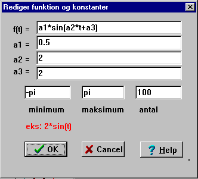
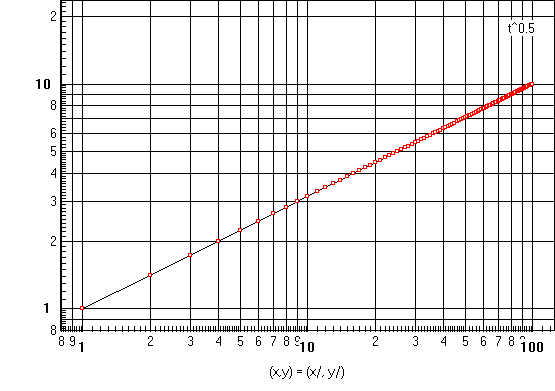

Datalyse kan benytte som et matematisk graftegningsprogram. Når matematisk analyse vælges i hovedmenuen popper dette billede op:

Her indtastes forskriften. Bemærk eksemplet: 2*sin(t)
I f(t) kan indgå alle sædvanlige funktioner: sin, cos, ln, ....
Bemærk, at konstanterne og grænserne minimum og maksimum også kan indtastes som regneudtryk. Når der trykkes på OK tegnes grafen.
Her et andet eksempel
f(t) = t^2*sin(t)
Her er først fundet et nulpunkt (-pi,0) og så tegnet en tangent.
Når du klikker på Max, Min eller Nulpunkt flyttes cursoren til det næste af slagsen og de relevante data skrives i statuslinien og i memoen.
f(t) = t^0.5

Bemærk, at akserne skaleres, så en dekade fylder lige meget på de to akser såvel på skærmen som på udskriften.